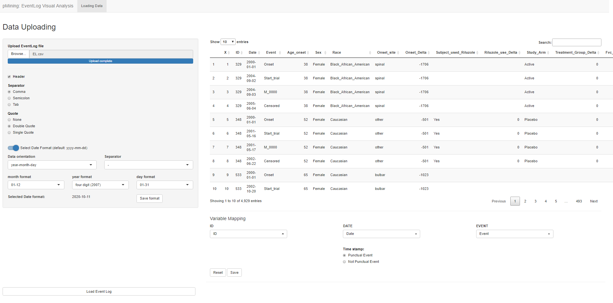

Chapter 2 Descriptive Module: “pMinShiny: EventLog Visual Analysis”
Each module of the software suite is structured in different sections, each one dedicated to a specific task
2.1 Data Loading section
The first section that makes up the Descriptive module is devoted to loading the Event Log. The user is asked to upload the desired file (in .csv format) and to specify which columns of the uploaded EL contain information about the patient identifier (ID), date (DATE), and event label (EVENT). It is also required to specify the type of event (whether punctual or not) and in the case of non punctual event, it is necessary to specify the column for the end date.

2.2 EventLog Data analysis section
This second section allows to observe different types of graphs.
Of these, three concern the distribution of events (Event Distribution over the EventLog, Event Distribution over patients and over time), two concern the co-occurrence of events (Co occurrence matrix and upset plot) and the last is about the traces and the contribute of all the traces during the time. It is possible to deselect the events you do not want to investigate by using the checkboxes on the left side of the section. For each graph there is an information window containing a description of the graph and specific inputs that allow to act on it.
2.3 EventLog Trace inspection section:
This section is dedicated to the analysis of traces and their visualization over time. Specifically, it is possible to extract subgroups of patients whose traces meet certain requirements and visualize them by time lines.
In the first subsection, the following information is represented in tabular format:
- ID: identifier of patients whose trace meets the requirements selected by the user
- from-to: at which position in the patient trace the from event and the to event are located ordinarily
- step (time): how many steps (or time) it takes to get from the from node to the to node
- valid : the check flag
trace Analysis: trace table sub-section
The second subsection shows the same information regarding the patients trace evolution in graphical format through two plots.
trace Analysis: time line plot sub-section